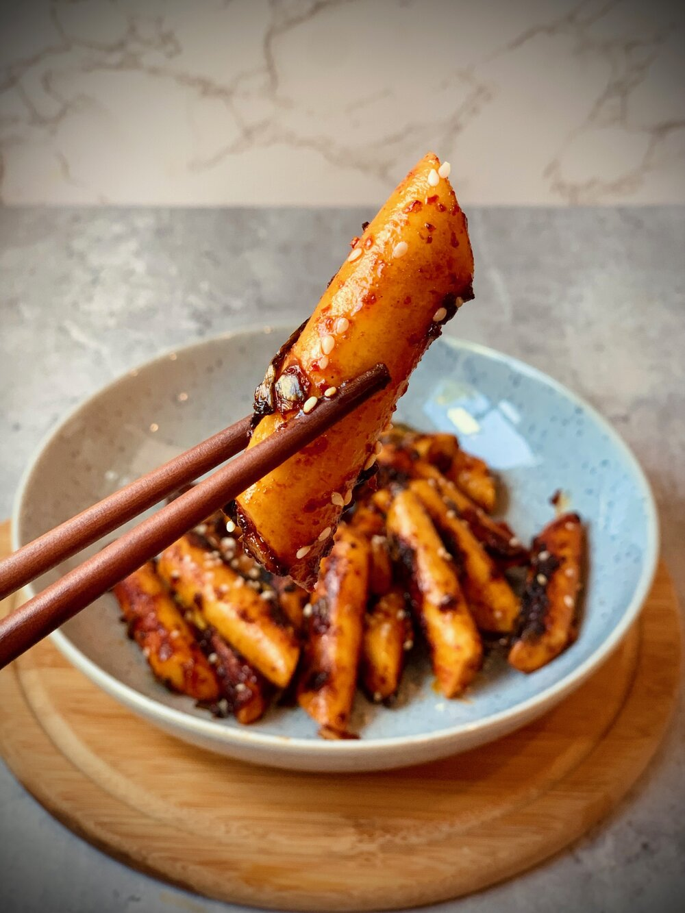

Go back
Oil Tteokbokki

Oil Tteokbokki is a savory, stir-fried Korean dish featuring crispy rice cakes tossed in garlic, soy sauce, and chili flakes for a flavorful, aromatic bite.
Ingredients
- 500 grams of Korean rice cake (tteok)
- 1 brown onion, sliced
- 1 spring onion, chopped
- 3 cloves of garlic, minced
- 2 spoons of cooking oil (e.g., sesame or vegetable oil)
- 1 spoon of soy sauce
- 1 spoon of gochugaru (Korean chili powder)
- 1 spoon of sugar
- sesame seeds for garnish (optional)
Steps
- Heat the cooking oil in a pan and stir-fry the minced garlic, onion, and spring onion until fragrant.
- Add the rice cakes and stir-fry for 3-4 minutes until they are slightly crispy on the outside.
- Add the soy sauce, gochugaru, and sugar, then continue to stir-fry until everything is well-coated.
- Sprinkle with sesame seeds and serve hot.
- Enjoy your savory and spicy Oil Tteokbokki!